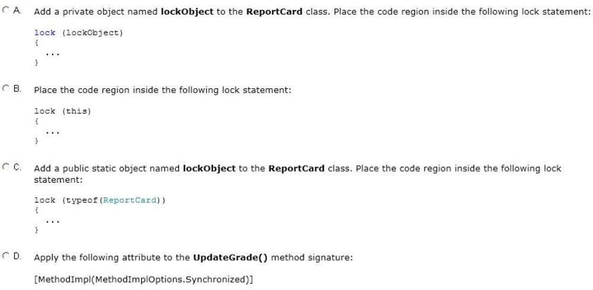

|
You are adding a public method named UpdateGrade to a public class named ReportCard. The code region that updates the grade field must meet the following requirements:
You need to implement the UpdateGrade() method. What should you do?  A. Option A B. Option B C. Option C D. Option D Correct Answer: A Section: Volume A Explanation Explanation/Reference: ExplicaciónRespuesta:Mostrando de manera visual la respuesta:Fuentes: |